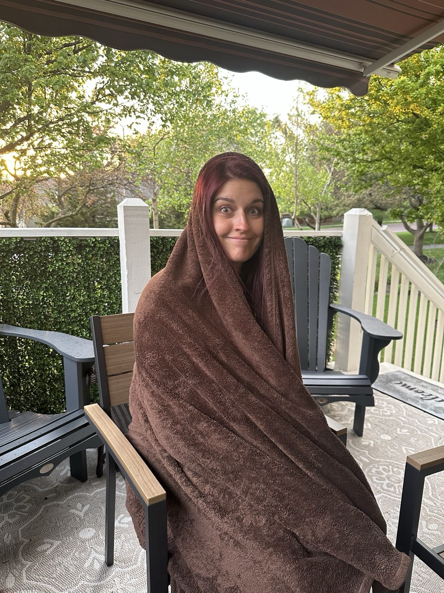

Things are Still Good!
I haven’t technically “graduated” yet… But grad school is done! I should probably celebrate that at some point.
The Data Journal Guide is 90% finished for the original planned content.
I’m now “TOGAF Certified”. So if you ever need some enterprise architecting, I guess I’m your man.
Our pseudo 75-hard is going really well!
We did a small upgrade to our small deck and we love it. Especially in the spring time. I’m writing this on it right now. Makes us feel like this:

And other good things may be on the horizon!
AI Thoughts
AI will Influence “Normal”
AI has a certain style of writing.
Everyone who regularly works with AI is being exposed to this style of writing.
In effect – it’s like we will all have the same friend whom we go to for help writing & proofing things.
I have already consciously adapted my writing style to mimic the effective style of AI.
👉 I’m accentuating this effect now, but not by much.
Local Large Language Models are Pretty Good!
As I previously wrote about, I own the entry-level Mac Mini.
On it, I can run local AI (meaning private and no internet required) using Ollama + open-source AI models… for free.
- Install Ollama
- Install an AI Model (which Ollama helps you do)
- The new gemma4 is quite solid
- → I’m running
gemma4:e4blocally
- → I’m running
- The new gemma4 is quite solid
And guess what? They are getting pretty good! Even for my low-powered baseline Mac Mini. The quality and speed of the results are “good enough” for day-to-day use.
And what’s great about this is:
- Usable: I can run as many prompt cycles as I want.
- Sustainable: I don’t feel like running this is hurting the rainforest (I’m using my own machine, and it draws very little power).
- Perpetual: I never have to worry about this simply “going away”—it’s mine, and it’s on my hardware.
Used it for this
I used it to help draft & edit this blog post. I actually do not run my Columns through AI as a rule, but this time I’ve made an exception.
Tool I Want
There’s a workflow I’ve tried to approximate, but I haven’t found the right solution for it yet.
Situation: I’m driving, or riding a bike.
flowchart a(Dictate intermittent thoughts out loud over 20+ minutes) b(Transcribe those thoughts to text) c(Send that text to a capable LLM) d(The LLM provides a cleaned up summary) e(I take action based on said thoughts) a-->b-->c-->d-->e
I know I have the necessary tools to do this, but they don’t remain configured or operational when I need them most.
Hopefully after WWDC this year we’ll learn Siri can do something like this.
Superpower Unlocked
I finally recognized the terminal for what it is – an always-available scripting environment.
Duh.
I’m not sure why I never thought to really trying playing with it. It’s awesome.
Turns out all the stuff I liked JavaScript and the browser for… you can basically just do with whatever language.
Duh.
This might be the biggest thing I learned in grad school.
Apple Pi
With the advent of the MacBook Neo, which utilizes an old iPhone chip to drive a full MacBook, it makes me wish there was an “Apple Pi”.
Apple Pi
A Raspberry Pi, but using an old iPhone and running MacOS
If the MacBook Neo can turn a profit for 200? Probably less! And it would be as good as my MacBook Neo? Sold. Sold millions.
Vehicular Mansplainer
Vans are trucks that look like cars.
SUVs are cars that look like trucks.
Top 5: Back-Burnered Projects I May Do Next
5. Built-ins in the basement
4. Fix the broken old puzzles on Aaron’s Puzzles
3. Build a generic systems modeling tool
For some reason this idea has kept coming up for most of the past decade. I found plans for this written in a notebook dated 2018.
2. Film a “You Should Make a Data Journal” video
In 2 days the Data Journal finishes it’s 13th year and begins its 14th.
1. This year’s puzzle box
Obviously.
Quote:
Spherical bastards. Bastards no matter which way you look at them. - Physicist Fritz Zwicky
You know what you call a med student who graduated with all D’s?
A doctor. - Zane gets back-to-back quotes